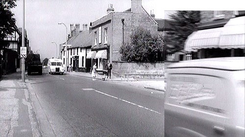
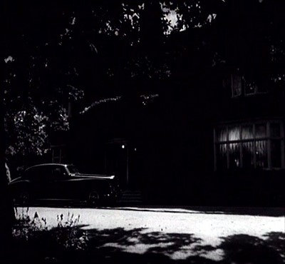
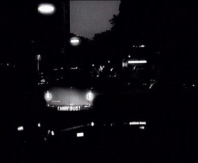
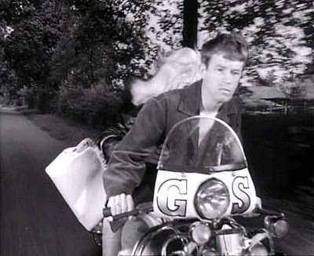
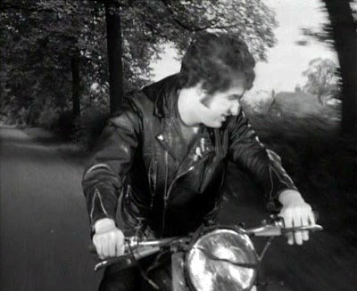
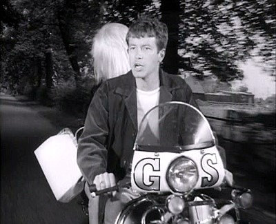
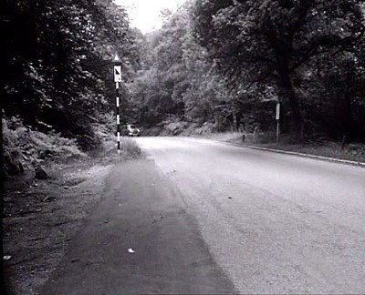
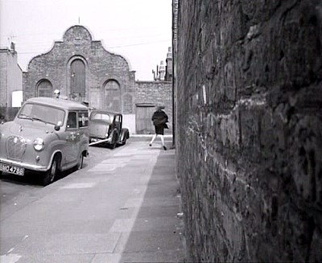

|
|
HELP FIND THE FOLLOWING LOCATIONS
PAGE 63
GIDEON’S
WAY: To Catch A Tiger (Les Norman, April 1965)
Bushey High Street/Park
Road,
Bushey- Nurse Smith is rushed to hospital
in an ambulance after being knocked down.
(Identified by the Artful Teacake, February 2010)

Dane Court, The Bishops Avenue, Hampstead, N2 – John Borgman
tries to relax at home with his
second wife Charlotte. Later John Borman
arrives back at his house after being questioned by
Commander Gideon.
(Identified by Geoff Dodd, February 2023)

Oxford
Street-
Commander George Gideon drives his family to
the cinema after a meal in town (footage of C&A
Oxford Streetopposite Selfridges, now a Primark).
(Confirmed by Geoff Dodd, October 2010)

Portman Square, W1- On the way to
the cinema with his
family, Commander George Gideon notices John Borgman
crossing the road and entering
an apartment block.
(Identified by Geoff Dodd, February 2023)

Unknown 1 – Samuels watches from his house as a police constable approaches.

The
east
side of Highate
Cemetery, Swain’s Lane-
A police constable guards the gates of the cemetery as the body of
Leah Anne Borgman
is disinterred by the police.
(Identified by Alan Field, May 2009)

GIDEON’S
WAY: The Rhyme and the
Reason (John Gilling,
August 1964)
Unknown
1– Bill Rose
takes
his girl, Winifred Norton for a romantic ride in the countryside.

Unknown 2- Bill Rose (Alan Rothwell).and Winifred (Carol White) are interrupted by a gang of rockers who decide they don’t like the ‘mod’ Bill.

 

Butterfly
Lane, Elstree - Chief Inspector Keen and Mary Henderson
just happen to be in the area driving.
(Identified by Alan Field, May 2009)

Unknown 5- When she is discovered by Fred Norton (Edward Evans), Mary Rose (Jo Robottom) runs from the Norton’s house in to the back alleyway. Fred follows in hot pursuit.

 Stephen
Carter – “Might be
Stephen
Carter – “Might be
[Source: 1913 OS map reproduced at 1:4340 scale and 1950s aerial
photo. Needs
verification.”
Doddington Road/Longhedge Road, London SW11 - Fred Norton
(Edward Evans)
continues to chase Mary Rose (Jo Robottom)
through the streets.
(Suggested by Stephen
Carter, August 2007, confirmed by Geoff Dodd, June 2022)


Think you know a spot? Need a bigger image? Email me.
< Previous | Index | Avengerland | Next >
Copyright © 2022 Anthony R. McKay